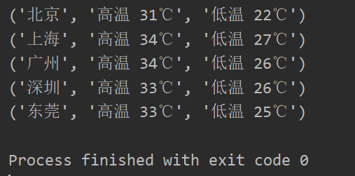

#3.1 如何实现可迭代对象和迭代器对象
import requests
from collections.abc import Iterable,Iterator
class WeatherIterator(Iterator):
def __init__(self,cities):
self.cities = cities
#从列表中迭代一个city，index就+1
self.index = 0
def __next__(self):
#如果所有的城市都迭代完了，就抛出异常
if self.index == len(self.cities):
raise StopIteration
#当前迭代的city
city = self.cities[self.index]
#迭代完当前city，index就+1
self.index += 1
return self.get_weather(city)
def get_weather(self,city):
url = 'http://wthrcdn.etouch.cn/weather_mini?city=' + city
r = requests.get(url)
#获取当天的天气信息
data = r.json()['data']['forecast'][0]
#返回城市名字、最高和最低气温
return city, data['high'], data['low']
class WeatherIterable(Iterable):
def __init__(self,cities):
self.cities = cities
def __iter__(self):
return WeatherIterator(self.cities)
def show(w):
for x in w:
print(x)
weather = WeatherIterable(['北京','上海','广州','深圳','东莞'])
show(weather)结果

#3.2如何使用生成器函数实现可迭代对象
from collections.abc import Iterable
class PrimeNumbers(Iterable):
def __init__(self,a,b):
self.a = a
self.b = b
def __iter__(self):
for k in range(self.a,self.b):
if self.is_prime(k):
yield k
def is_prime(self,k):
return False if k < 2 else all(map(lambda x : k % x, range(2, k)))
#打印1到30直接的素数
pn = PrimeNumbers(1, 30)
for n in pn:
print(n)反向迭代
In [75]: l = [1,2,3,4,5]
In [76]: for x in l:
...: print(x)
...:
1
2
3
4
5
In [77]: for x in reversed(l):
...: print(x)
...:
5
4
3
2
1
要想实现反向迭代必须实现__reversed__方法
#3.3.如何进行反向迭代以及如何实现反向迭代
class IntRange:
def __init__(self,a,b,step):
self.a = a
self.b = b
self.step = step
def __iter__(self):
t = self.a
while t <= self.b:
yield t
t += self.step
def __reversed__(self):
t = self.b
while t >= self.a:
yield t
t -= self.step
fr = IntRange(1, 10, 2)
for x in fr:
print(x)
print('=' * 30)
#反向迭代
for y in reversed(fr):
print(y)（1）切片的实质是__getitem__方法
In [9]: l = list(range(10))
In [10]: l[3]
Out[10]: 3
In [11]: l.__getitem__(3)
Out[11]: 3
In [12]: l[2:6]
Out[12]: [2, 3, 4, 5]
In [13]: l.__getitem__(slice(2,6))
Out[13]: [2, 3, 4, 5]（2）打印文件第2~5行
islice能返回一个迭代对象切片的生成器
#3.4.如何对迭代器做切片操作
from itertools import islice
f= open('iter_islice')
#打印文件的第2~5行内容
for line in islice(f, 1, 5):
print(line)（3）自己实现islice功能
#自己实现一个类似islice的功能
def my_slice(iterable, start, end, step=1):
for i, x in enumerate(iterable):
if i >= end:
break
if i >= start:
yield x
print(list(my_slice(range(1,20), 4, 10))) #[5, 6, 7, 8, 9, 10]
from itertools import islice
print(list(islice(range(1,20),4, 10))) #[5, 6, 7, 8, 9, 10]（4）加step
#3.4.如何对迭代器做切片操作
from itertools import islice
f= open('iter_islice')
#打印文件的第2~5行内容
for line in islice(f, 1, 5):
print(line)
#自己实现一个类似islice的功能
def my_slice(iterable, start, end, step=1):
tmp = 0
for i, x in enumerate(iterable):
if i >= end:
break
if i >= start:
if tmp == 0:
tmp = step
yield x
tmp -= 1
print(list(my_slice(range(1,20), 4, 10))) #[5, 6, 7, 8, 9, 10]
print(list(my_slice(range(1,20), 4, 10,2))) #[5, 7, 9]
from itertools import islice
print(list(islice(range(1,20),4, 10))) #[5, 6, 7, 8, 9, 10]
print(list(islice(range(1,20),4, 10,2))) #[5, 7, 9]计算学生的三科成绩总分，用zip()函数
In [25]: from random import randint
In [26]: chinese = [randint(60,100) for _ in range(10)]
In [27]: math = [randint(60,100) for _ in range(10)]
In [28]: english = [randint(60,100) for _ in range(10)]
In [29]: chinese
Out[29]: [70, 63, 85, 74, 70, 96, 60, 69, 62, 83]
In [30]: math
Out[30]: [76, 81, 86, 93, 74, 83, 69, 63, 60, 80]
In [31]: english
Out[31]: [100, 96, 83, 89, 71, 79, 82, 87, 81, 71]
In [32]: t = []
In [33]: for s1, s2, s3 in zip(chinese, math, english):
...: t.append(s1 + s2 +s3)
...:
In [34]: t
Out[34]: [246, 240, 254, 256, 215, 258, 211, 219, 203, 234]求三个班级中分数高于90分的总人数，用chain
In [53]: c1 = [randint(60,100) for _ in range(1,10)]
In [54]: c2 = [randint(60,100) for _ in range(1,10)]
In [55]: c3 = [randint(60,100) for _ in range(1,10)]
In [56]: c1
Out[56]: [60, 79, 89, 84, 68, 68, 89, 68, 82]
In [57]: c2
Out[57]: [69, 64, 87, 89, 60, 77, 89, 81, 90]
In [58]: c3
Out[58]: [80, 92, 64, 73, 68, 84, 97, 71, 65]
In [59]: from itertools import chain
In [60]: len([ x for x in chain(c1, c2, c3) if x > 90])
Out[60]: 2